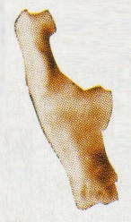
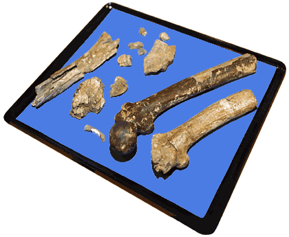
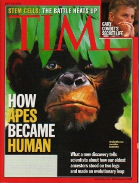
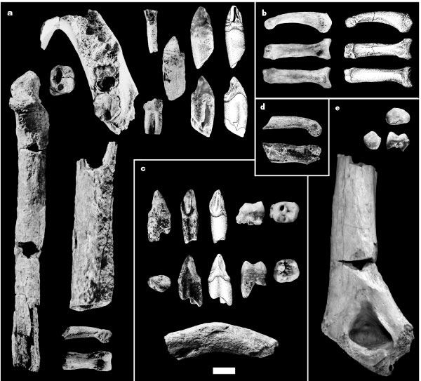
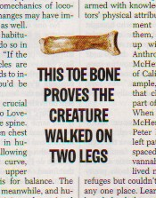

| Feature Article - September 2001 |
| by Do-While Jones |
For these fossils to be evidence of evolution, we maintain that two things must be true. First, it must be established that the creature represented by the fossil really existed. Second, if the creature really existed, then we have to have some way to determine if that creature really was an evolutionary intermediate.
This month, we will address the issue of how much fossil evidence is needed to establish the existence of an extinct creature.
If someone's motto is, "Don't confuse me with the facts--my mind is made up," then no amount of evidence would convince him. He is unreasonable. Certainly there must be some amount of fossil evidence that could convince a reasonable person that unicorns existed.
Suppose that several different teams of paleontologists discovered a total of 50 perfectly preserved skeletons of a species of an animal that resembled a horse with a single horn coming from its head. Suppose many other experts (who were in no way connected with the discoverers of the fossils) examined the fossils and verified that the fossils were genuine. Would that be sufficient evidence that unicorns once roamed the earth? That would certainly be sufficient evidence for us.
Suppose there were only 45 perfectly preserved, certifiably genuine, skeletons. Would you not believe in unicorns for the lack of five skeletons? We presume you would believe if there were only 45 skeletons. If we may beg your indulgence for just a moment, suppose the 45 skeletons lacked five? Would you not believe if there were only 40 skeletons?
Let's cut straight to the chase. Suppose there was only one perfectly preserved skeleton. Would that be enough to convince you? It would, if you were National Geographic. In November, 1999, they ran a 10-page cover story, "Feathers for T. Rex" whose subtitle was "NEW BIRDLIKE FOSSILS ARE MISSING LINKS IN DINOSAUR EVOLUTION". This was based on a single fossil they called "Archaeoraptor liaoningenesis".
As it turned out, the fossil was a fake. It was quickly exposed and National Geographic printed a retraction; but that is beside the point. Our point is that one complete fossil meets the National Geographic standard of sufficient evidence for the existence of an extinct animal.
If there were just one complete fossil unicorn that experts all agreed was genuine, that would be enough evidence for us. In fact, that fossil could be missing part of one rib, and we would still consider it convincing evidence. As a matter of fact, if the entire left hind leg were gone, that wouldn't bother us. Actually, all we really require is enough of the skull to show that its head was generally horse-shaped with a single horn, and some post-cranial bones (clearly associated with that skull) which establish a generally horse-shaped body.
If that isn't enough evidence for you, we understand. It takes a certain amount of faith and imagination to fill in the gaps if 75% of the bones are missing. If you require a skeleton that is 95% complete, we can't say that you are being unreasonable. You are just a little more skeptical than we are.
Now, how close together would those bones have to be? What if they found most of a horn, and 10 miles away they found a lower jaw that looked a lot like the jaw of a horse. How comfortable would you be associating that horn with the skull? (Assume, of course, that both were found in the same rock layer.) Would that be enough evidence for you? If not, suppose they found a few scattered ribs, vertebrae, and leg bones in the 10 miles between them. Would that be sufficient evidence to convince you that unicorns existed? Maybe we are too skeptical, but that would not be enough evidence for us.
What did you say? How does anyone know what a unicorn tooth looks like? You obviously don't know anything about teeth. Scientists can tell everything they need to know from teeth. A unicorn tooth would certainly be a lot like a horse's tooth, but just a little bit different. So, if we find a tooth that looks like a horse's tooth, but is a little bit different, it must have come from a unicorn.
You aren't buying that? You need more evidence that a single tooth? Obviously, it is going to be hard to convince you that unicorns existed.
We know, of course, that evolutionists don't claim that man evolved from apes. Man and apes evolved from a common ancestor that was neither ape nor man. The parent of the apes was also the parent of the humans.
For years, evolutionists have claimed that man and apes had a human ancestor, but were never able to produce any fossil evidence. But that changed just three years ago.

|
The discovery of the first primate, Eosimias (which means "early ape"), was announced in August of 1998. The fossil evidence for Eosimias consists of two small bones, each the size of a grain of rice.
We could only find a picture of one of those two bones. 1 Here it is, at the right, greatly enlarged. If it were three times larger than it actually is, it would look a lot like the heel bone of a mouse lemur, the smallest living primate. This is what makes some people think it came from a smaller creature that looked like a mouse lemur. |
 |

|
They were shorter than your pinky, lighter than a golf ball, and equipped with a bottomless pit for a stomach. Recently discovered, the forty-five-million-year-old bones of the smallest primates ever known could shed light on the beginnings of a very special kind of primate--the anthropoids, which include monkeys, apes, and us humans. 2 |
| Based on this heel bone, and one other bone, Nancy Perkins of the Carnegie Museum of Natural History painted the picture (at the left) of Eosimias, the parent of the apes and man, in its natural habitat. 3 |
Nobody paid much attention to it for almost two years. Then, for reasons we don't know, Time, Newsweek, and U.S. News and World Report all ran articles on it in March, 2000. They all accepted the existence of Eosimias, and its place in evolutionary history.
We suspect an evolutionist would say that the heel bone could not be from a modern infant mouse lemur because the bone is 45 million years old, and mouse lemurs hadn't evolved yet. Therefore, it must be from an ancestor of the mouse lemur, because the bone looks so similar to a modern mouse lemur. Since all the primates (that is, apes and man) evolved from a common ancestor, this must be the common ancestor (because it is the oldest known primate).
That is ridiculous logic, based entirely upon the preconception that species evolved from other species at particular times. Since this reasoning is so obviously foolish, we expect to get angry emails from evolutionists saying that we aren't presenting the evolutionary position accurately. We promise to print those messages IF the email contains an explanation of why anyone should believe that this heel bone (and another small bone) is sufficient evidence to believe that Eosimias ever existed.
|
On avait presque oublié sa première molaire découverte en 1974. Et voilà qu'aujourd'hui, fier de ses treize os fossiles datés de 6,2 millions d'années, il se présente comme le plus vieux pré-humain et veut convaincre de réviser la généalogie humaine. [They almost forgot about him since his first tooth was discovered in 1974. And now, today, on the strength of his 13 fossil bones dated at 6.2 million years old, he presents himself as the oldest pre-human and wants to convince scientists to revise human genealogy.]
Mélange de caractères humains et simiesques, on lui donne 1m40 pour 50kg. Homme? Femme? Son sexe n'est pas encore déterminé. Plus humain que Lucy, moins primate que les grands singes auxquels il a été comparé, il suggère que la séparation entre la lignée des australopithèques et celle de l'homme est plus ancienne qu'on ne le pensait. Enfin, ses vieux os font de lui le plus ancien hominidé bipède, prouvant ainsi que la bipédie est, elle aussi, plus précoce qu'on ne le croyait. Quant à son nom, Orrorin tugenesis, il signifie en tugen "Homme originel "*. Un nom qui prétend s'affirmer comme un "nouveau genre" dans l'histoire de l'humanité... [A mixture of human and ape-like characteristics, he stood 4 feet 6 inches tall, and weighed 110 pounds. Man? Woman? His gender is still not determined. More human than Lucy, less ape-like than the great apes to which he has been compared, he suggests that the separation between the lines of australopithecines and humans is earlier than was previously thought. Finally, his old bones make him the oldest bipedal hominid, proving thus that upright walking, too, developed earlier than believed. Therefore he was named, Orrorin tugenesis, which means in Tungen "Original Man". It is a name which affirms that he is a "new kind" in the history of humanity ... .] Trois fémurs, deux fragments de mandibules, un humérus, une poignée de dents, voilà l'Ancêtre du Millénaire! ... Ce sera sans doute sa première et dernière sortie du Kenya... Treize os fossilisés ... qui selon les premières déductions appartiennent à six individus dont un enfant puisqu'on a retrouvé une dent de lait. "Il est rare de retrouver ensemble du matériel dentaire et du matériel post-crânien (squelette)", précise David Gommery (CNRS). Le seul regret, c'est qu'il manque un crâne! [ Three thigh bones, two jaw fragments, an arm bone, a handful of teeth, there you have the Millennial Ancestor! ... This will be without a doubt the first and last to leave Kenya... Thirteen fossilized bones ... which, according to preliminary analysis, appear to be from six individuals, of which one was an infant in which they found a baby tooth. It is rare to find dental material and some post-cranial (skeletal) material together," according to David Gommery (CNRS). The only disappointment is that he lacks a skull!] 4 |
| Martin Pickford stands in the middle of a long, dry gully lined with tamarind and acacia trees. A light breeze ushers a handful of cottony clouds across the blue African sky toward Lake Baringo, some 20 kilometers to the east. Pickford points with a sunburned arm to a spot on the gully's bank. "That is where we found the humerus," he says proudly. "And just over here, one of the femurs and an upper canine tooth, and further down there, parts of the mandible and the molars." ... And just last month, during a 2-week season here at the foot of Kenya's rugged Tugen Hills, Pickford and Senut found several more fossils-including the middle portion of a lower jaw-that they believe also belong to this claimed early hominid, which they have named Orrorin tugenensis [sic]. 5 |
|
 |
So, these thirteen bones (shown at the left) clearly don't belong to the same individual. How do we know they belong to the same species?
Thirteen fossils from six individuals is an average of two bones per individual. There might be five skeletons each with one bone, and a sixth skeleton consisting of eight bones. But even a single skeleton consisting of these thirteen bones is far from a complete skeleton. Would these thirteen bones be enough to convince you that unicorns existed? Are they sufficient proof that Millennial Man existed? They are for some evolutionists. |
|
PARIS-Brigitte Senut took the weathered fossils from her safe and laid them out, one by one, on her desk. To an untutored eye, they might not look like much: broken femurs, bits of lower jaw, several teeth--13 fossils in all. But these relics have caused one of the biggest sensations in the field of human evolution in years. In two papers scheduled for publication in the 28 February issue of the Comptes Rendus de l'Académie des Sciences, a team led by Senut, a paleontologist at France's National Museum of Natural History, and geologist Martin Pickford of the Collège de France claims that these 6-million-year-old bones unearthed in Kenya represent our earliest known ancestor.
If that's true, "Millennium Ancestor"--so called because the bones were found last year--would predate other leading candidates by some 2 million years. But Senut and Pickford have a more drastic shake-up in mind for the human family tree. They believe that all australopithecines--hominids which include the famous skeleton Lucy, whose species is thought to be one of our direct ancestors--should be relegated to a side branch in favor of their specimen. Millennium Ancestor appears to have been a bipedal primate--perhaps the first of its kind--at home equally on the ground and in the trees. Because the fossils date to a period when the human and ape lineages are thought to have split, any primate remains from that time could shine a strong light on our murky origins. The findings also enflame an ongoing debate about what constitutes a hominid. 6 |
Actually, twelve of these bones are unnecessary. One evolutionist said,
| "I have been expecting this discovery for 25 years," says Yves Coppens of the Collège de France, a co-author of one of the Comptes Rendus papers. "One tooth was enough to know that hominids were there." 7 |
Some skeptical articles have appeared in the journal Science. After summarizing the Millennial Man claims, Michael Balter says,
|
Others, however, doubt that the bones even belonged to a hominid--a loose classification that currently includes the australopithecines and the genus Homo--or even that the species they belonged to walked on two feet. "The case for a hominid is weak," argues Lucy co-discoverer Donald Johanson, director of the Institute of Human Origins at Arizona State University in Tempe. Indeed, says David Begun of the University of Toronto, the fragments cannot reveal whether Orrorin was "on the line to humans, on the line to chimps, a common ancestor to both, or just an extinct side branch."
... These conflicting views reflect the fact that experts lack a clear definition of a hominid, says Jeffrey Schwartz of the University of Pittsburgh. 8 |
|
Such a dramatic find would normally be cause for rejoicing among human origins researchers. Instead, Orrorin's discovery has set off a bitter internecine battle. Pickford and Senut's very right to excavate here has been challenged by some other scientists, most notably anthropologist Andrew Hill of Yale University, who claims that the pair is encroaching on turf his team has been studying since the 1980s. Hill and other researchers argue that Pickford and Senut have flouted long-established rules governing paleontology research in Kenya. Pickford and Senut deny these charges, countering that they have acted legally and followed all required procedures. They maintain that a campaign against them has been orchestrated primarily by paleontologist Richard Leakey, a claim Leakey vehemently denies.
Turf battles among paleoanthropologists are nothing new. 9 |
In fact, the journal Science has devoted more space to the legal battles over the fossils than to the fossils themselves.
When evidence is inadequate or nonexistent, conclusions are based on the reputations of the scientists involved. Few people actually see the actual fossils in question. The vast majority of scientists have to take the word of whoever writes the journal articles. Therefore, it is a question of who has the most integrity. Paleontologists never miss an opportunity to discredit their rivals. This diminishes the damage of any criticism the rival might make.
Evolutionists don't have any objective standard like our Unicorn Test. Fossils don't have to meet any stated requirement to be sufficient evidence for existence. The reputation (or, perhaps, nationality) of the discoverer is all that matters.
|
 We found it amusing that although "Haile-Selassie and his colleagues haven't collected enough bones yet to reconstruct with great precision what kadabba looked like", they apparently have collected enough bones for Time magazine to put a picture of its face on the cover. Ironically, many of the fossils are teeth, but the Time cover shows the animal with its mouth closed. The evidence presented in Nature is shown below. 12 |
This, according to the cover of the July 23, 2001, Time magazine tells, "HOW APES BECAME HUMAN" and "tells scientists about how our oldest ancestors stood on two legs and made an evolutionary leap."
|

Please look carefully at the picture of the kadabba fossils above and tell us how you would estimate the size of its brain.
The Time article gets even more amusing. They say,
|
 |
|
In other words, they walked like we do because they had the same kind of toe bone as humans have, but they walked differently than we do because they had a different skeletal structure.
| Quick links to | |
|---|---|
| Science Against Evolution Home Page |
Back issues of Disclosure (our newsletter) |
| Web Site of the Month |
Topical Index |
Footnotes:
1
Earth magazine, August 1998, "Small Beginnings", page 11
(Ev)
2
ibid.
3
ibid.
4
www.cite-sciences.fr/actu/2001/03/ancetre/html/
(Ev)
5
Michael Balter, Science 2001 April 13; 292: "Paleontological Rift in the Rift Valley"pages 198-201 https://www.science.org/doi/10.1126/science.292.5515.198 (Ev)
(Note: Actually, they named him "Orrorin tugenesis".)
6
Michael Balter, Science 2001 23 February; 291: "Scientists Spar Over Claims of Earliest Human Ancestor" pages 1460-1461 https://www.science.org/doi/10.1126/science.291.5508.1460
(Ev)
7
ibid.
8
ibid.
9
Michael Balter, Science 2001 April 13; 292: "Paleontological Rift in the Rift Valley"pages 198-201 https://www.science.org/doi/10.1126/science.292.5515.198 (Ev)
10
Time, July 23, 2001, "One Giant Step For Mankind" page 56.
(Ev)
11
ibid. page 57.
12
Yohannes Haile-Selassie, Nature 12 July, 2001 "Late Miocene hominids from the Middle Awash, Ethiopia" pages 178-181 https://www.nature.com/articles/35084063
(Ev)
13
Time, July 23, 2001, "One Giant Step For Mankind" page 59.